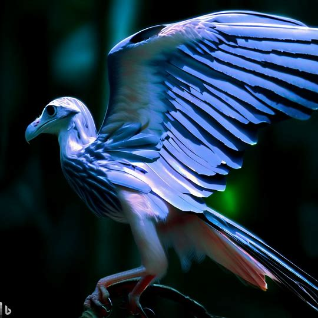
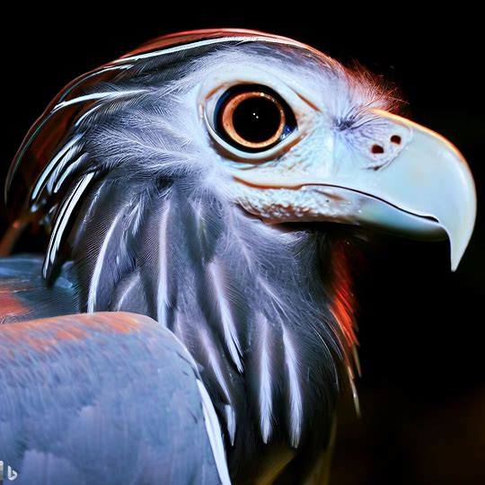
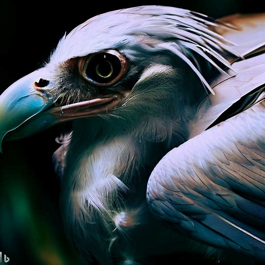
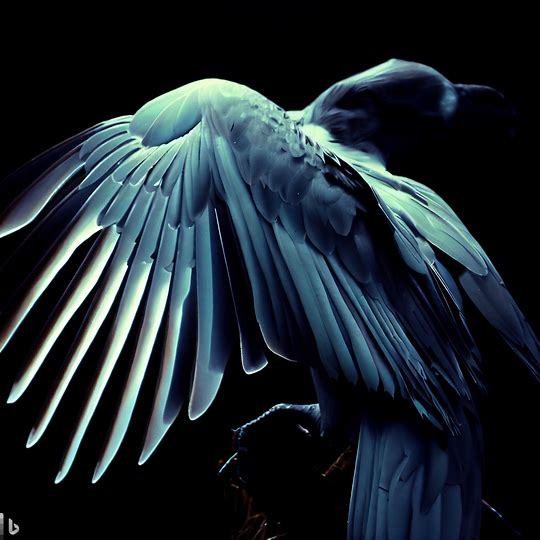

Fantasy & Beyond Museum

- Silverwing
- シルバーウィング




-
シルバーウィングは、空を舞う鳥のような存在で、美しい骨格を持っています。
- 体長は中程度で、背中から尾までの長い翼を備えています。
- 羽毛は銀色で輝き、日光に当たるときらめくような美しさを持っています。
- 頭部は小さく、くちばしは短くて鋭く、目は大きくて明るい色をしています。
- 羽根は軽くて柔らかく、風を受けると優雅な飛翔をします。
- 翼は幅広で、舞い上がることも、高速で飛ぶこともできます。
- 骨格は細くてしなやかであり、機敏な動きを可能にします。
- シルバーウィングは夜行性で、夜の空で輝く月の下で最も活動的になります。